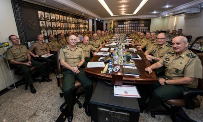

Como surgiu?
Oficialmente entende-se que o Exército Brasileiro surgiu com a independência do Brasil, em 1822. A transformação de nosso país em nação independente fez com que as forças que formavam o Exército Português aqui se fragmentassem, e uma parte delas deu origem ao nosso Exército. Essa força foi importante para consolidar o processo de independência do nosso país.
Missão
O Exército Brasileiro é uma das forças que integram as Forças Armadas do Brasil, atuando em conjunto da Marinha e da Aeronáutica. Um dos papéis que o Exército desempenha é o de garantir a soberania do Brasil, protegendo suas fronteiras e o seu território; além de atuar como mantenedor da ordem, do respeito aos princípios constitucionais, podendo e devendo ser mobilizado também para o atendimento da população mais carente e em contextos emergenciais.
Organizacao do Exército Brasileiro
O Exército Brasileiro é uma das instituições mais importantes e estratégicas em nosso país, devendo, portanto, ter uma estrutura organizativa ampla, complexa e eficiente. A direção-geral é realizada pelo Alto Comando do Exército, responsável direto pelo controle e comando das forças terrestres.
